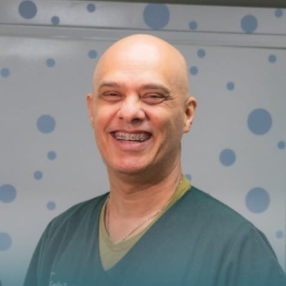

Sobre Juan Felipe Garcés Rodríguez
Fonoaudiólogo especialista en habla infantil y labio-paladar hendido, con más de 25 años de experiencia acompañando a niños y sus familias.

Mi trayectoria profesional
Soy Juan Felipe Garcés Rodríguez, fonoaudiólogo con más de 25 años de experiencia trabajando con niños que presentan dificultades en el habla, el lenguaje, la voz y el aprendizaje. A lo largo de mi carrera he acompañado a numerosas familias en el proceso de comprender, evaluar y mejorar el desarrollo comunicativo de sus hijos.
Soy egresado de la Fundación Universitaria María Cano y cuento con dos especializaciones en áreas relacionadas con el desarrollo del lenguaje y la rehabilitación del habla. Además, estoy avalado por Smile Train para el manejo de pacientes con labio y paladar hendido y hago parte del equipo interdisciplinario encargado del manejo de esta condición en la Fundación Clínica Noel en Medellín.
Mi trabajo se enfoca en identificar de forma precisa las dificultades que puede estar presentando el niño y diseñar estrategias terapéuticas claras y efectivas. Entiendo que para los padres es fundamental saber qué está ocurriendo, si es normal o no para la edad, y qué se puede hacer para ayudar a su hijo.
Por eso, en cada proceso terapéutico busco que los padres comprendan la situación, resuelvan sus dudas y reciban pautas concretas que puedan aplicar en casa. El objetivo es favorecer el desarrollo del habla, mejorar la capacidad de expresión del niño y fortalecer sus habilidades de comunicación y aprendizaje.
Conversemos sobre el proceso de tu hijo
Estoy para ayudarte a entender qué está ocurriendo con el habla o lenguaje de tu hijo y definir juntos el mejor plan de intervención.